ID: cat-train-n02121808_1820/felzenszwalb_masked_softmax
Accuracy: 0.687 -> 0.69
Mean Recall: 0.687 -> 0.69
Mean Precision: 0.692 -> 0.695
Mean F1: 0.684 -> 0.689
Target Recall: 0.549 -> 0.593
Target Precision: 0.553 -> 0.492
Target F1: 0.551 -> 0.538
Orig Pred Recall: 0.877 -> 0.83
Orig Pred Precision: 0.68 -> 0.785
Orig Pred F1: 0.766 -> 0.807

 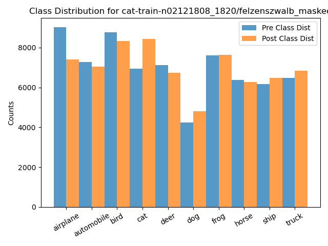
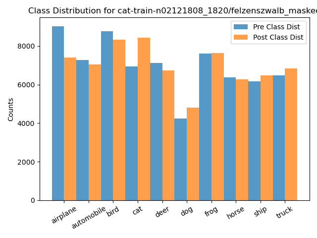
ID: cat-train-n02125494_5963/felzenszwalb_gaussian_softmax
Accuracy: 0.687 -> 0.688
Mean Recall: 0.687 -> 0.688
Mean Precision: 0.692 -> 0.694
Mean F1: 0.684 -> 0.685
Target Recall: 0.549 -> 0.585
Target Precision: 0.553 -> 0.514
Target F1: 0.551 -> 0.547
Orig Pred Recall: 0.743 -> 0.719
Orig Pred Precision: 0.594 -> 0.62
Orig Pred F1: 0.66 -> 0.666


ID: cat-train-n02124484_645/felzenszwalb_masked_softmax
Accuracy: 0.687 -> 0.687
Mean Recall: 0.687 -> 0.687
Mean Precision: 0.692 -> 0.695
Mean F1: 0.684 -> 0.687
Target Recall: 0.549 -> 0.561
Target Precision: 0.553 -> 0.509
Target F1: 0.551 -> 0.534
Orig Pred Recall: 0.877 -> 0.75
Orig Pred Precision: 0.68 -> 0.872
Orig Pred F1: 0.766 -> 0.806


ID: cat-train-n02125311_49991/felzenszwalb_gaussian_softmax
Accuracy: 0.687 -> 0.687
Mean Recall: 0.687 -> 0.687
Mean Precision: 0.692 -> 0.694
Mean F1: 0.684 -> 0.684
Target Recall: 0.549 -> 0.589
Target Precision: 0.553 -> 0.519
Target F1: 0.551 -> 0.552
Orig Pred Recall: 0.61 -> 0.571
Orig Pred Precision: 0.6 -> 0.636
Orig Pred F1: 0.605 -> 0.601
 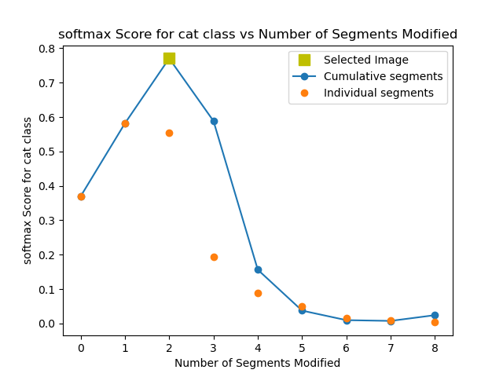
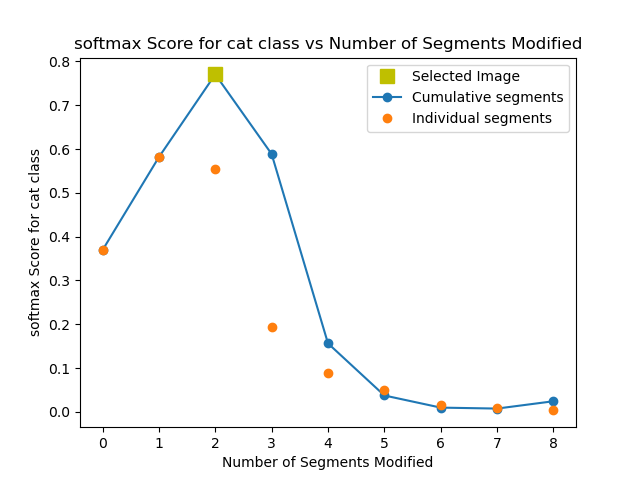

ID: cat-train-n02129923_8962/felzenszwalb_gaussian_softmax
Accuracy: 0.687 -> 0.687
Mean Recall: 0.687 -> 0.687
Mean Precision: 0.692 -> 0.694
Mean F1: 0.684 -> 0.684
Target Recall: 0.549 -> 0.587
Target Precision: 0.553 -> 0.516
Target F1: 0.551 -> 0.549
Orig Pred Recall: 0.61 -> 0.589
Orig Pred Precision: 0.6 -> 0.617
Orig Pred F1: 0.605 -> 0.603
 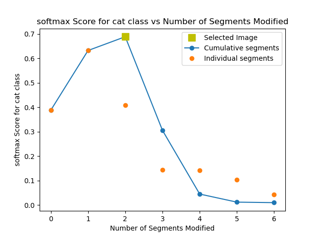
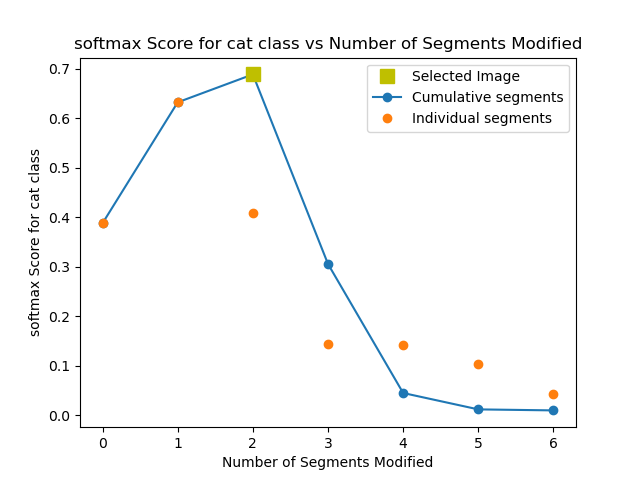

ID: cat-train-n01322898_2372/felzenszwalb_gaussian_softmax
Accuracy: 0.687 -> 0.685
Mean Recall: 0.687 -> 0.685
Mean Precision: 0.692 -> 0.695
Mean F1: 0.684 -> 0.681
Target Recall: 0.549 -> 0.575
Target Precision: 0.553 -> 0.527
Target F1: 0.551 -> 0.55
Orig Pred Recall: 0.427 -> 0.387
Orig Pred Precision: 0.706 -> 0.751
Orig Pred F1: 0.532 -> 0.511


ID: cat-train-n02124484_5856/felzenszwalb_gaussian_softmax
Accuracy: 0.687 -> 0.684
Mean Recall: 0.687 -> 0.684
Mean Precision: 0.692 -> 0.696
Mean F1: 0.684 -> 0.68
Target Recall: 0.549 -> 0.602
Target Precision: 0.553 -> 0.505
Target F1: 0.551 -> 0.549
Orig Pred Recall: 0.61 -> 0.538
Orig Pred Precision: 0.6 -> 0.67
Orig Pred F1: 0.605 -> 0.597


ID: cat-train-n02124484_5856/felzenszwalb_masked_softmax
Accuracy: 0.687 -> 0.683
Mean Recall: 0.687 -> 0.683
Mean Precision: 0.692 -> 0.7
Mean F1: 0.684 -> 0.683
Target Recall: 0.549 -> 0.659
Target Precision: 0.553 -> 0.442
Target F1: 0.551 -> 0.529
Orig Pred Recall: 0.61 -> 0.583
Orig Pred Precision: 0.6 -> 0.63
Orig Pred F1: 0.605 -> 0.606
 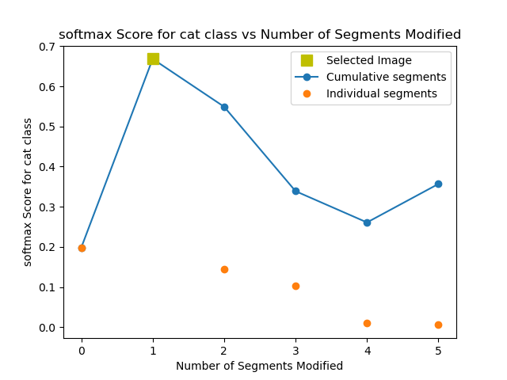
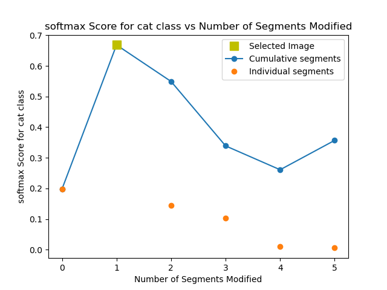

ID: cat-train-n02129837_3103/felzenszwalb_masked_softmax
Accuracy: 0.687 -> 0.679
Mean Recall: 0.687 -> 0.679
Mean Precision: 0.692 -> 0.709
Mean F1: 0.684 -> 0.682
Target Recall: 0.549 -> 0.722
Target Precision: 0.553 -> 0.406
Target F1: 0.551 -> 0.52
Orig Pred Recall: 0.61 -> 0.517
Orig Pred Precision: 0.6 -> 0.701
Orig Pred F1: 0.605 -> 0.595
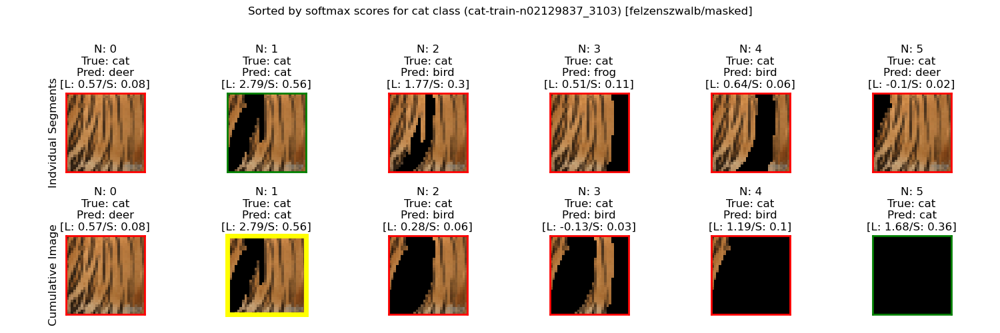 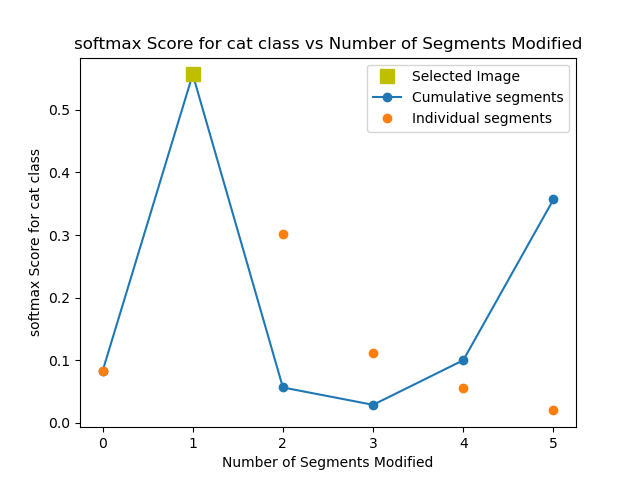
ID: cat-train-n02123917_3389/felzenszwalb_masked_softmax
Accuracy: 0.687 -> 0.677
Mean Recall: 0.687 -> 0.677
Mean Precision: 0.692 -> 0.699
Mean F1: 0.684 -> 0.672
Target Recall: 0.549 -> 0.614
Target Precision: 0.553 -> 0.494
Target F1: 0.551 -> 0.548
Orig Pred Recall: 0.427 -> 0.317
Orig Pred Precision: 0.706 -> 0.825
Orig Pred F1: 0.532 -> 0.458


ID: cat-train-n02130308_1049/felzenszwalb_gaussian_softmax
Accuracy: 0.687 -> 0.677
Mean Recall: 0.687 -> 0.677
Mean Precision: 0.692 -> 0.702
Mean F1: 0.684 -> 0.677
Target Recall: 0.549 -> 0.642
Target Precision: 0.553 -> 0.474
Target F1: 0.551 -> 0.545
Orig Pred Recall: 0.808 -> 0.686
Orig Pred Precision: 0.744 -> 0.881
Orig Pred F1: 0.775 -> 0.771


ID: cat-train-n02124484_5305/felzenszwalb_gaussian_softmax
Accuracy: 0.687 -> 0.676
Mean Recall: 0.687 -> 0.676
Mean Precision: 0.692 -> 0.699
Mean F1: 0.684 -> 0.669
Target Recall: 0.549 -> 0.6
Target Precision: 0.553 -> 0.491
Target F1: 0.551 -> 0.54
Orig Pred Recall: 0.427 -> 0.278
Orig Pred Precision: 0.706 -> 0.856
Orig Pred F1: 0.532 -> 0.42
 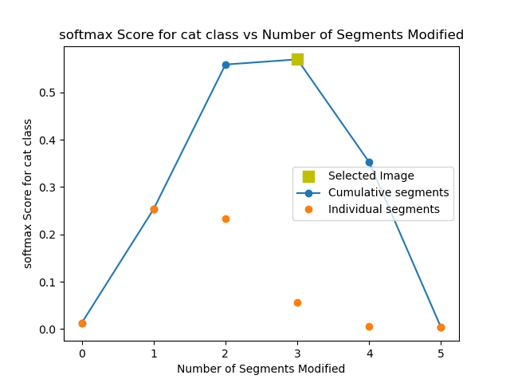
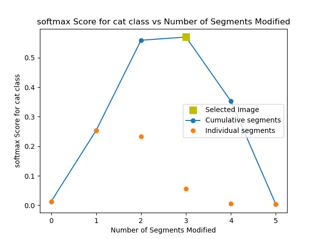

ID: cat-train-n02125494_807/felzenszwalb_masked_softmax
Accuracy: 0.687 -> 0.675
Mean Recall: 0.687 -> 0.675
Mean Precision: 0.692 -> 0.71
Mean F1: 0.684 -> 0.679
Target Recall: 0.549 -> 0.728
Target Precision: 0.553 -> 0.405
Target F1: 0.551 -> 0.52
Orig Pred Recall: 0.61 -> 0.558
Orig Pred Precision: 0.6 -> 0.653
Orig Pred F1: 0.605 -> 0.602

 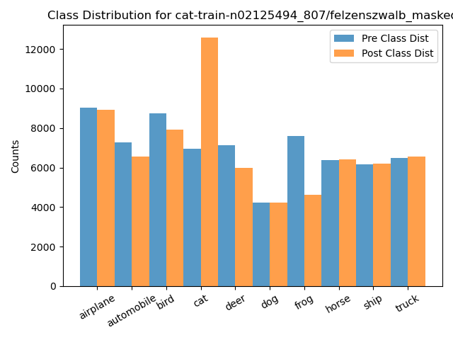
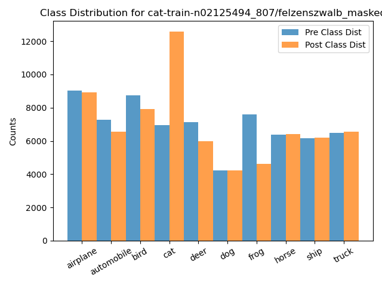
ID: cat-train-n02127052_20412/felzenszwalb_masked_softmax
Accuracy: 0.687 -> 0.675
Mean Recall: 0.687 -> 0.675
Mean Precision: 0.692 -> 0.701
Mean F1: 0.684 -> 0.674
Target Recall: 0.549 -> 0.663
Target Precision: 0.553 -> 0.475
Target F1: 0.551 -> 0.553
Orig Pred Recall: 0.61 -> 0.456
Orig Pred Precision: 0.6 -> 0.753
Orig Pred F1: 0.605 -> 0.568


ID: cat-train-n02123478_6246/felzenszwalb_masked_softmax
Accuracy: 0.687 -> 0.674
Mean Recall: 0.687 -> 0.674
Mean Precision: 0.692 -> 0.707
Mean F1: 0.684 -> 0.672
Target Recall: 0.549 -> 0.696
Target Precision: 0.553 -> 0.418
Target F1: 0.551 -> 0.522
Orig Pred Recall: 0.743 -> 0.646
Orig Pred Precision: 0.594 -> 0.707
Orig Pred F1: 0.66 -> 0.675
 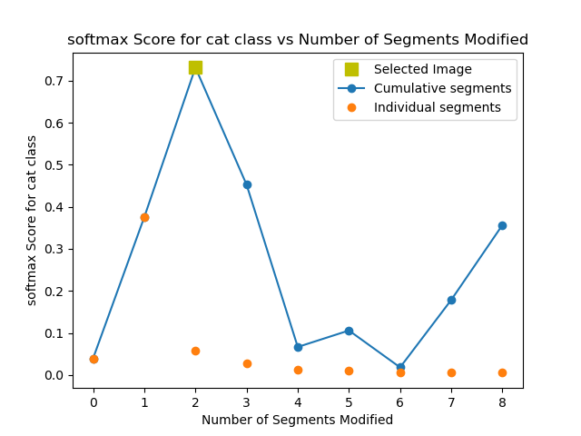
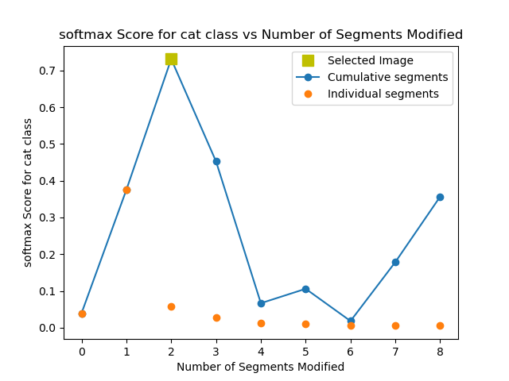

ID: cat-train-n02130308_1049/felzenszwalb_masked_softmax
Accuracy: 0.687 -> 0.674
Mean Recall: 0.687 -> 0.674
Mean Precision: 0.692 -> 0.7
Mean F1: 0.684 -> 0.673
Target Recall: 0.549 -> 0.646
Target Precision: 0.553 -> 0.476
Target F1: 0.551 -> 0.548
Orig Pred Recall: 0.808 -> 0.632
Orig Pred Precision: 0.744 -> 0.918
Orig Pred F1: 0.775 -> 0.748


ID: cat-train-n02129991_438/felzenszwalb_masked_softmax
Accuracy: 0.687 -> 0.673
Mean Recall: 0.687 -> 0.673
Mean Precision: 0.692 -> 0.696
Mean F1: 0.684 -> 0.666
Target Recall: 0.549 -> 0.576
Target Precision: 0.553 -> 0.51
Target F1: 0.551 -> 0.541
Orig Pred Recall: 0.427 -> 0.293
Orig Pred Precision: 0.706 -> 0.852
Orig Pred F1: 0.532 -> 0.436


ID: cat-train-n02121808_3994/felzenszwalb_gaussian_softmax
Accuracy: 0.687 -> 0.673
Mean Recall: 0.687 -> 0.673
Mean Precision: 0.692 -> 0.703
Mean F1: 0.684 -> 0.667
Target Recall: 0.549 -> 0.641
Target Precision: 0.553 -> 0.44
Target F1: 0.551 -> 0.522
Orig Pred Recall: 0.427 -> 0.26
Orig Pred Precision: 0.706 -> 0.849
Orig Pred F1: 0.532 -> 0.398

 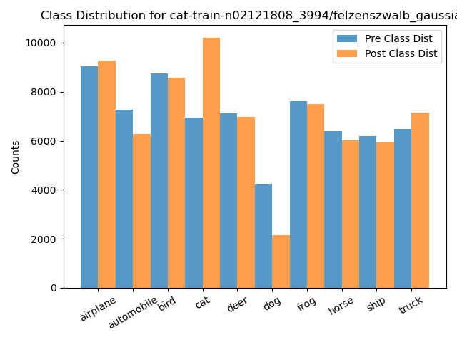
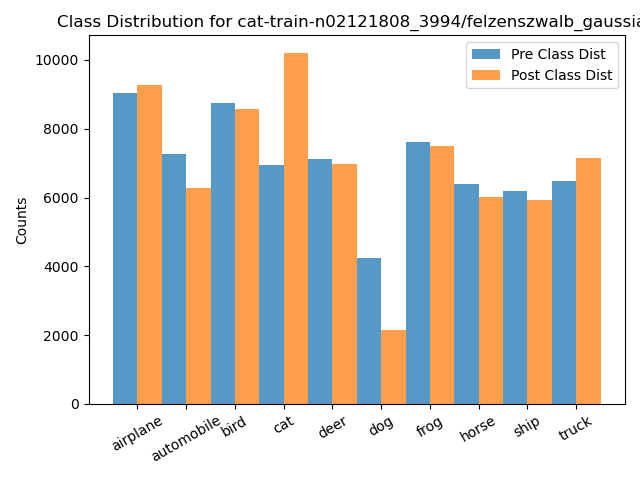
ID: cat-train-n02123159_5240/felzenszwalb_masked_softmax
Accuracy: 0.687 -> 0.672
Mean Recall: 0.687 -> 0.672
Mean Precision: 0.692 -> 0.709
Mean F1: 0.684 -> 0.67
Target Recall: 0.549 -> 0.708
Target Precision: 0.553 -> 0.399
Target F1: 0.551 -> 0.511
Orig Pred Recall: 0.61 -> 0.365
Orig Pred Precision: 0.6 -> 0.842
Orig Pred F1: 0.605 -> 0.509
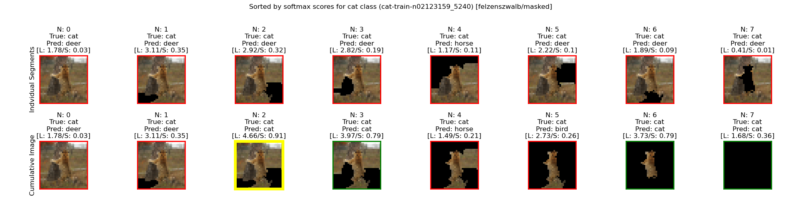

ID: cat-train-n02124484_5305/felzenszwalb_masked_softmax
Accuracy: 0.687 -> 0.671
Mean Recall: 0.687 -> 0.671
Mean Precision: 0.692 -> 0.701
Mean F1: 0.684 -> 0.662
Target Recall: 0.549 -> 0.636
Target Precision: 0.553 -> 0.445
Target F1: 0.551 -> 0.524
Orig Pred Recall: 0.427 -> 0.227
Orig Pred Precision: 0.706 -> 0.869
Orig Pred F1: 0.532 -> 0.359
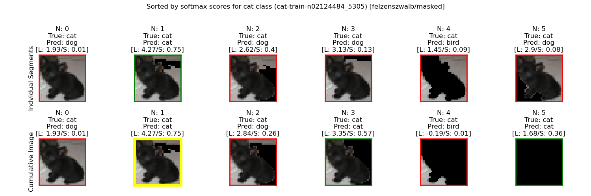

ID: cat-train-n01323068_5219/felzenszwalb_masked_softmax
Accuracy: 0.687 -> 0.67
Mean Recall: 0.687 -> 0.67
Mean Precision: 0.692 -> 0.701
Mean F1: 0.684 -> 0.672
Target Recall: 0.549 -> 0.66
Target Precision: 0.553 -> 0.459
Target F1: 0.551 -> 0.542
Orig Pred Recall: 0.808 -> 0.702
Orig Pred Precision: 0.744 -> 0.881
Orig Pred F1: 0.775 -> 0.781


ID: cat-train-n02127808_8559/felzenszwalb_masked_softmax
Accuracy: 0.687 -> 0.67
Mean Recall: 0.687 -> 0.67
Mean Precision: 0.692 -> 0.717
Mean F1: 0.684 -> 0.672
Target Recall: 0.549 -> 0.76
Target Precision: 0.553 -> 0.373
Target F1: 0.551 -> 0.5
Orig Pred Recall: 0.61 -> 0.376
Orig Pred Precision: 0.6 -> 0.825
Orig Pred F1: 0.605 -> 0.517


ID: cat-train-n02130308_6204/felzenszwalb_masked_softmax
Accuracy: 0.687 -> 0.67
Mean Recall: 0.687 -> 0.67
Mean Precision: 0.692 -> 0.712
Mean F1: 0.684 -> 0.667
Target Recall: 0.549 -> 0.719
Target Precision: 0.553 -> 0.402
Target F1: 0.551 -> 0.515
Orig Pred Recall: 0.743 -> 0.568
Orig Pred Precision: 0.594 -> 0.807
Orig Pred F1: 0.66 -> 0.667


ID: cat-train-n02127052_22986/felzenszwalb_gaussian_softmax
Accuracy: 0.687 -> 0.663
Mean Recall: 0.687 -> 0.663
Mean Precision: 0.692 -> 0.713
Mean F1: 0.684 -> 0.659
Target Recall: 0.549 -> 0.704
Target Precision: 0.553 -> 0.383
Target F1: 0.551 -> 0.496
Orig Pred Recall: 0.61 -> 0.264
Orig Pred Precision: 0.6 -> 0.909
Orig Pred F1: 0.605 -> 0.41


ID: cat-train-n01322898_2372/felzenszwalb_masked_softmax
Accuracy: 0.687 -> 0.658
Mean Recall: 0.687 -> 0.658
Mean Precision: 0.692 -> 0.717
Mean F1: 0.684 -> 0.648
Target Recall: 0.549 -> 0.75
Target Precision: 0.553 -> 0.395
Target F1: 0.551 -> 0.517
Orig Pred Recall: 0.427 -> 0.179
Orig Pred Precision: 0.706 -> 0.92
Orig Pred F1: 0.532 -> 0.3
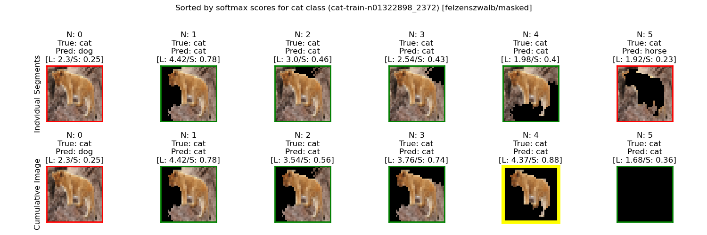

ID: cat-train-n02121808_3994/felzenszwalb_masked_softmax
Accuracy: 0.687 -> 0.646
Mean Recall: 0.687 -> 0.646
Mean Precision: 0.692 -> 0.656
Mean F1: 0.684 -> 0.618
Target Recall: 0.549 -> 0.635
Target Precision: 0.553 -> 0.385
Target F1: 0.551 -> 0.48
Orig Pred Recall: 0.427 -> 0.0
Orig Pred Precision: 0.706 -> 0.5
Orig Pred F1: 0.532 -> 0.0


ID: cat-train-n02123917_3389/felzenszwalb_gaussian_softmax
Accuracy: 0.687 -> 0.645
Mean Recall: 0.687 -> 0.645
Mean Precision: 0.692 -> 0.602
Mean F1: 0.684 -> 0.615
Target Recall: 0.549 -> 0.598
Target Precision: 0.553 -> 0.41
Target F1: 0.551 -> 0.487
Orig Pred Recall: 0.427 -> 0.0
Orig Pred Precision: 0.706 -> 0.0
Orig Pred F1: 0.532 -> 0.0
 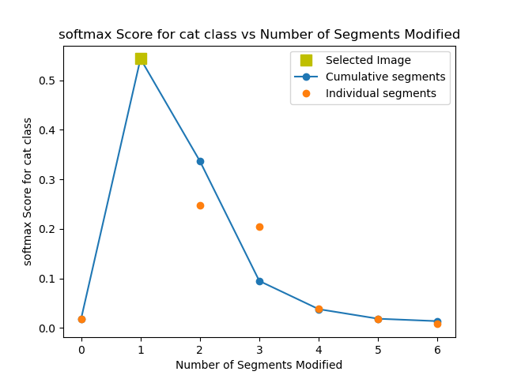
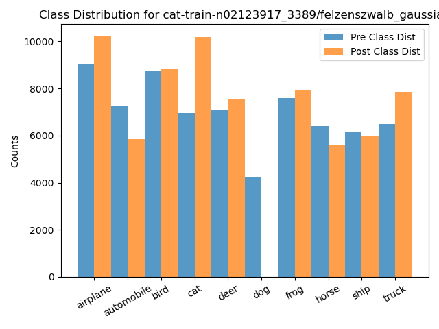
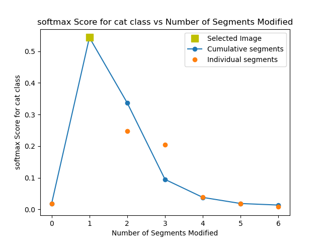
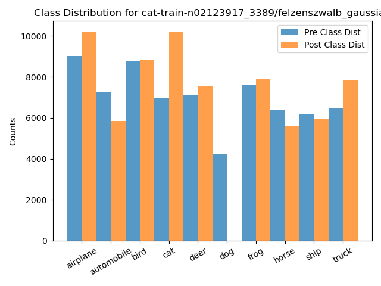
ID: cat-train-n02125311_5619/felzenszwalb_masked_softmax
Accuracy: 0.687 -> 0.636
Mean Recall: 0.687 -> 0.636
Mean Precision: 0.692 -> 0.716
Mean F1: 0.684 -> 0.611
Target Recall: 0.549 -> 0.705
Target Precision: 0.553 -> 0.333
Target F1: 0.551 -> 0.452
Orig Pred Recall: 0.61 -> 0.0
Orig Pred Precision: 0.6 -> 1.0
Orig Pred F1: 0.605 -> 0.0


ID: cat-train-n02130308_278/felzenszwalb_masked_softmax
Accuracy: 0.687 -> 0.636
Mean Recall: 0.687 -> 0.636
Mean Precision: 0.692 -> 0.609
Mean F1: 0.684 -> 0.609
Target Recall: 0.549 -> 0.659
Target Precision: 0.553 -> 0.352
Target F1: 0.551 -> 0.459
Orig Pred Recall: 0.61 -> 0.0
Orig Pred Precision: 0.6 -> 0.0
Orig Pred F1: 0.605 -> 0.0


ID: cat-train-n02129463_8239/felzenszwalb_masked_softmax
Accuracy: 0.687 -> 0.635
Mean Recall: 0.687 -> 0.635
Mean Precision: 0.692 -> 0.612
Mean F1: 0.684 -> 0.609
Target Recall: 0.549 -> 0.692
Target Precision: 0.553 -> 0.343
Target F1: 0.551 -> 0.459
Orig Pred Recall: 0.61 -> 0.0
Orig Pred Precision: 0.6 -> 0.0
Orig Pred F1: 0.605 -> 0.0


ID: cat-train-n02125311_49991/felzenszwalb_masked_softmax
Accuracy: 0.687 -> 0.635
Mean Recall: 0.687 -> 0.635
Mean Precision: 0.692 -> 0.618
Mean F1: 0.684 -> 0.611
Target Recall: 0.549 -> 0.728
Target Precision: 0.553 -> 0.328
Target F1: 0.551 -> 0.453
Orig Pred Recall: 0.61 -> 0.0
Orig Pred Precision: 0.6 -> 0.0
Orig Pred F1: 0.605 -> 0.0
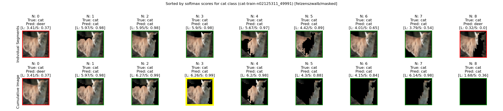 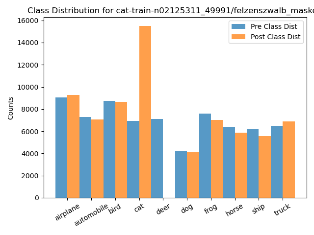
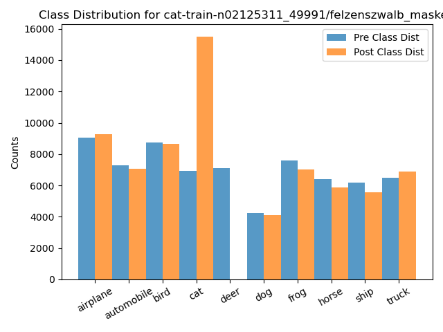
ID: cat-train-n02123159_5240/felzenszwalb_gaussian_softmax
Accuracy: 0.687 -> 0.634
Mean Recall: 0.687 -> 0.634
Mean Precision: 0.692 -> 0.599
Mean F1: 0.684 -> 0.603
Target Recall: 0.549 -> 0.652
Target Precision: 0.553 -> 0.447
Target F1: 0.551 -> 0.53
Orig Pred Recall: 0.61 -> 0.0
Orig Pred Precision: 0.6 -> 0.0
Orig Pred F1: 0.605 -> 0.0
 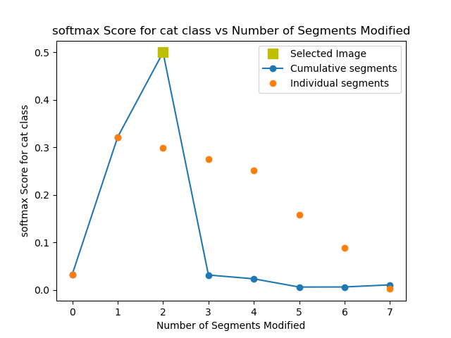
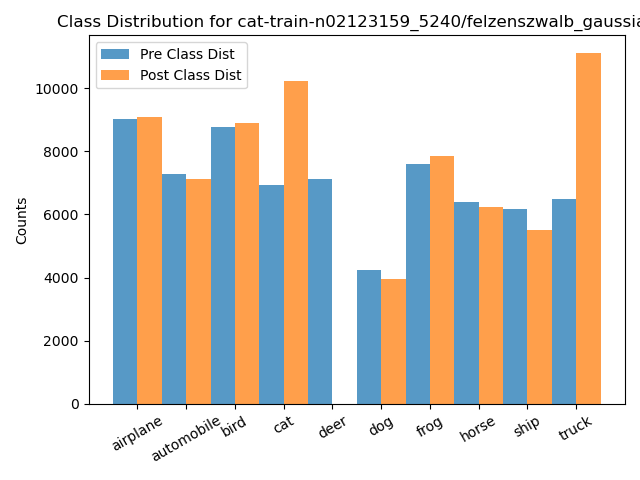
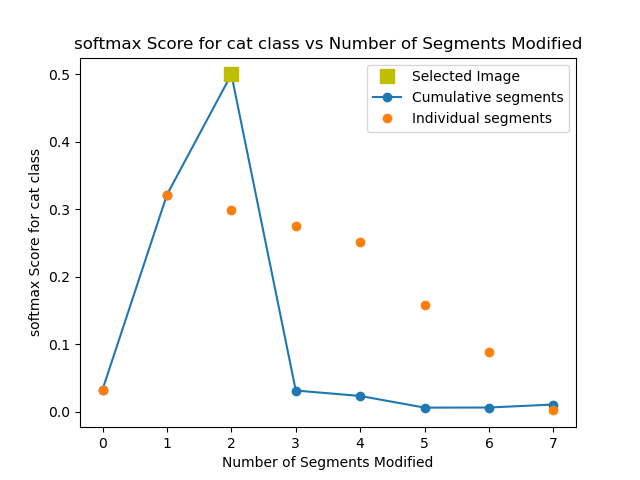
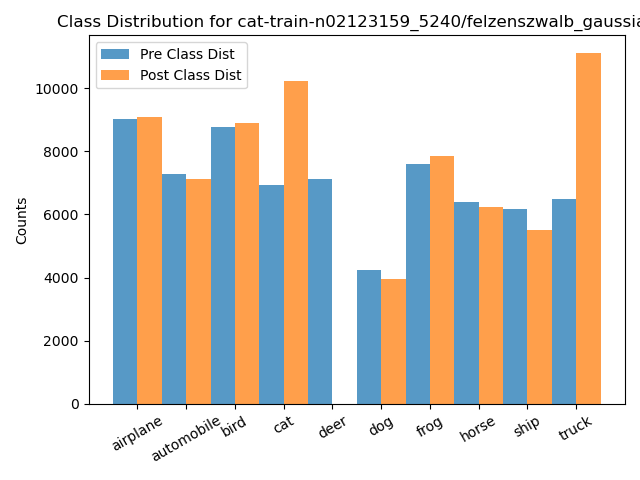
ID: cat-train-n02129923_8962/felzenszwalb_masked_softmax
Accuracy: 0.687 -> 0.633
Mean Recall: 0.687 -> 0.633
Mean Precision: 0.692 -> 0.624
Mean F1: 0.684 -> 0.612
Target Recall: 0.549 -> 0.751
Target Precision: 0.553 -> 0.316
Target F1: 0.551 -> 0.445
Orig Pred Recall: 0.61 -> 0.0
Orig Pred Precision: 0.6 -> 0.0
Orig Pred F1: 0.605 -> 0.0

 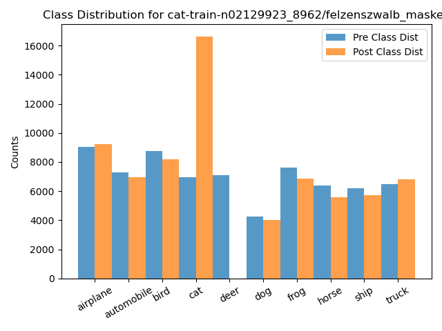
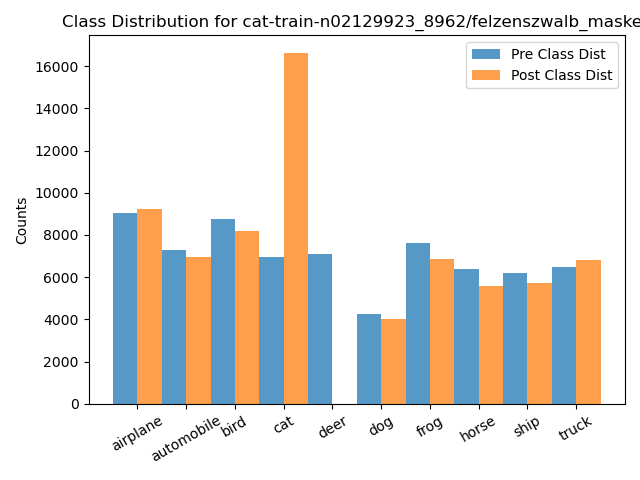
ID: cat-train-n02126640_3914/felzenszwalb_masked_softmax
Accuracy: 0.687 -> 0.633
Mean Recall: 0.687 -> 0.633
Mean Precision: 0.692 -> 0.611
Mean F1: 0.684 -> 0.606
Target Recall: 0.549 -> 0.679
Target Precision: 0.553 -> 0.352
Target F1: 0.551 -> 0.464
Orig Pred Recall: 0.61 -> 0.0
Orig Pred Precision: 0.6 -> 0.0
Orig Pred F1: 0.605 -> 0.0

 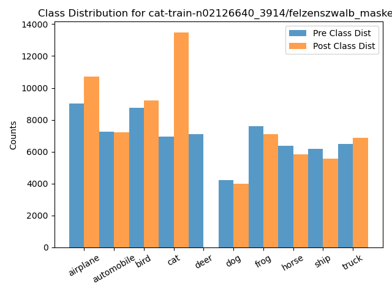
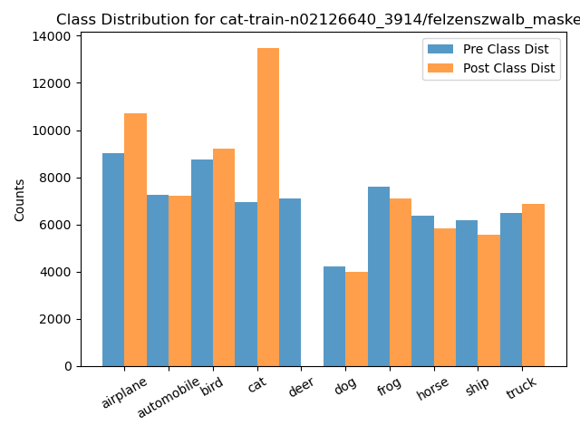
ID: cat-train-n02129991_4244/felzenszwalb_gaussian_softmax
Accuracy: 0.687 -> 0.631
Mean Recall: 0.687 -> 0.631
Mean Precision: 0.692 -> 0.615
Mean F1: 0.684 -> 0.606
Target Recall: 0.549 -> 0.677
Target Precision: 0.553 -> 0.341
Target F1: 0.551 -> 0.454
Orig Pred Recall: 0.61 -> 0.0
Orig Pred Precision: 0.6 -> 0.0
Orig Pred F1: 0.605 -> 0.0
 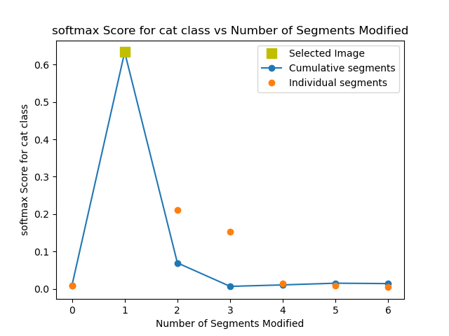
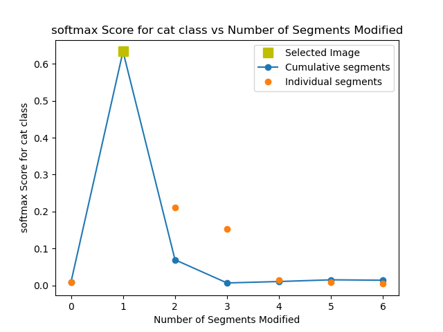

ID: cat-train-n02120997_13029/felzenszwalb_masked_softmax
Accuracy: 0.687 -> 0.629
Mean Recall: 0.687 -> 0.629
Mean Precision: 0.692 -> 0.727
Mean F1: 0.684 -> 0.607
Target Recall: 0.549 -> 0.756
Target Precision: 0.553 -> 0.314
Target F1: 0.551 -> 0.444
Orig Pred Recall: 0.61 -> 0.011
Orig Pred Precision: 0.6 -> 1.0
Orig Pred F1: 0.605 -> 0.021


ID: cat-train-n02125311_6009/felzenszwalb_masked_softmax
Accuracy: 0.687 -> 0.628
Mean Recall: 0.687 -> 0.628
Mean Precision: 0.692 -> 0.629
Mean F1: 0.684 -> 0.609
Target Recall: 0.549 -> 0.763
Target Precision: 0.553 -> 0.304
Target F1: 0.551 -> 0.435
Orig Pred Recall: 0.61 -> 0.0
Orig Pred Precision: 0.6 -> 0.0
Orig Pred F1: 0.605 -> 0.0
 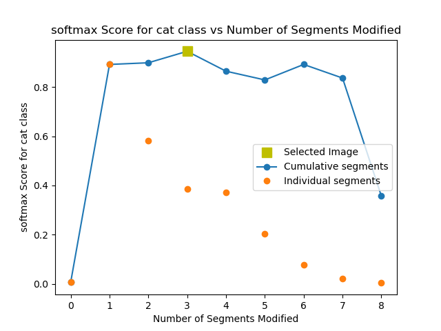
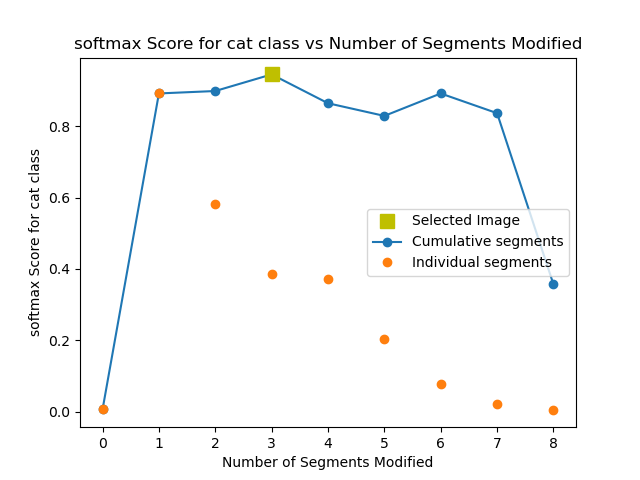

ID: cat-train-n02129991_1363/felzenszwalb_masked_softmax
Accuracy: 0.687 -> 0.627
Mean Recall: 0.687 -> 0.627
Mean Precision: 0.692 -> 0.609
Mean F1: 0.684 -> 0.605
Target Recall: 0.549 -> 0.699
Target Precision: 0.553 -> 0.317
Target F1: 0.551 -> 0.437
Orig Pred Recall: 0.743 -> 0.0
Orig Pred Precision: 0.594 -> 0.0
Orig Pred F1: 0.66 -> 0.0


ID: cat-train-n02129991_4244/felzenszwalb_masked_softmax
Accuracy: 0.687 -> 0.627
Mean Recall: 0.687 -> 0.627
Mean Precision: 0.692 -> 0.633
Mean F1: 0.684 -> 0.61
Target Recall: 0.549 -> 0.777
Target Precision: 0.553 -> 0.3
Target F1: 0.551 -> 0.433
Orig Pred Recall: 0.61 -> 0.0
Orig Pred Precision: 0.6 -> 0.0
Orig Pred F1: 0.605 -> 0.0
 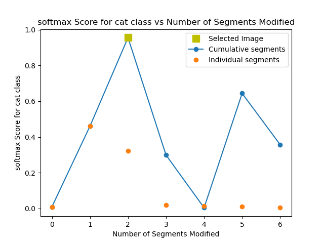
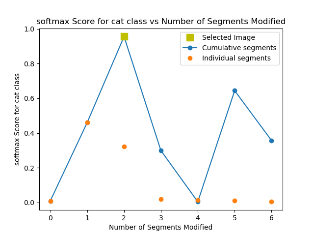

ID: cat-train-n02127052_22986/felzenszwalb_masked_softmax
Accuracy: 0.687 -> 0.627
Mean Recall: 0.687 -> 0.627
Mean Precision: 0.692 -> 0.631
Mean F1: 0.684 -> 0.609
Target Recall: 0.549 -> 0.766
Target Precision: 0.553 -> 0.304
Target F1: 0.551 -> 0.435
Orig Pred Recall: 0.61 -> 0.0
Orig Pred Precision: 0.6 -> 0.0
Orig Pred F1: 0.605 -> 0.0


ID: cat-train-n02124623_8152/felzenszwalb_gaussian_softmax
Accuracy: 0.687 -> 0.626
Mean Recall: 0.687 -> 0.626
Mean Precision: 0.692 -> 0.716
Mean F1: 0.684 -> 0.607
Target Recall: 0.549 -> 0.708
Target Precision: 0.553 -> 0.296
Target F1: 0.551 -> 0.417
Orig Pred Recall: 0.743 -> 0.008
Orig Pred Precision: 0.594 -> 1.0
Orig Pred F1: 0.66 -> 0.015

 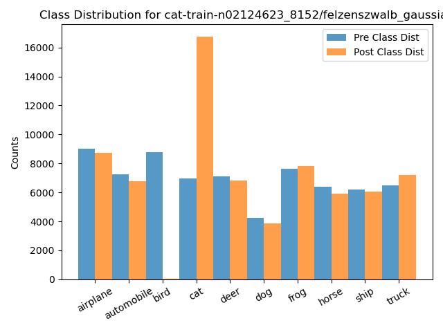
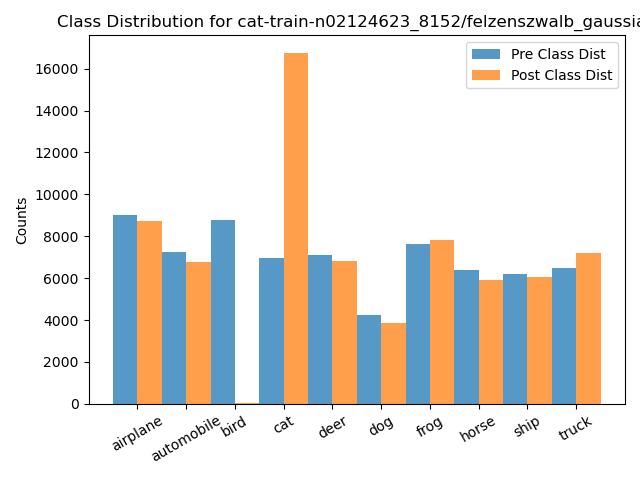
ID: cat-train-n02123159_7852/felzenszwalb_masked_softmax
Accuracy: 0.687 -> 0.622
Mean Recall: 0.687 -> 0.622
Mean Precision: 0.692 -> 0.733
Mean F1: 0.684 -> 0.617
Target Recall: 0.549 -> 0.779
Target Precision: 0.553 -> 0.281
Target F1: 0.551 -> 0.413
Orig Pred Recall: 0.743 -> 0.089
Orig Pred Precision: 0.594 -> 0.994
Orig Pred F1: 0.66 -> 0.164

 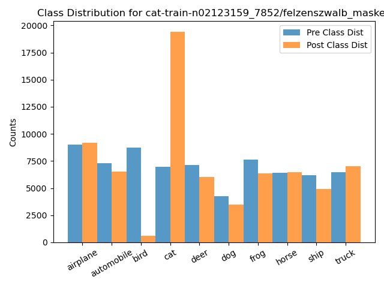
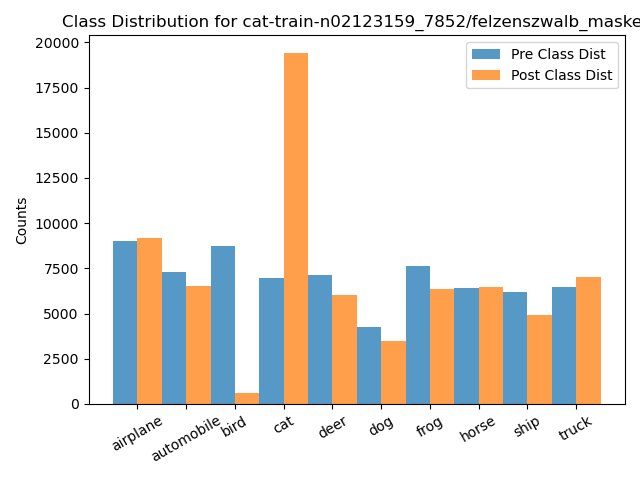
ID: cat-train-n02129165_4052/felzenszwalb_masked_softmax
Accuracy: 0.687 -> 0.622
Mean Recall: 0.687 -> 0.622
Mean Precision: 0.692 -> 0.617
Mean F1: 0.684 -> 0.602
Target Recall: 0.549 -> 0.718
Target Precision: 0.553 -> 0.299
Target F1: 0.551 -> 0.422
Orig Pred Recall: 0.743 -> 0.0
Orig Pred Precision: 0.594 -> 0.0
Orig Pred F1: 0.66 -> 0.0


ID: cat-train-n02123159_7852/felzenszwalb_gaussian_softmax
Accuracy: 0.687 -> 0.621
Mean Recall: 0.687 -> 0.621
Mean Precision: 0.692 -> 0.609
Mean F1: 0.684 -> 0.595
Target Recall: 0.549 -> 0.68
Target Precision: 0.553 -> 0.319
Target F1: 0.551 -> 0.434
Orig Pred Recall: 0.743 -> 0.0
Orig Pred Precision: 0.594 -> 0.0
Orig Pred F1: 0.66 -> 0.0
 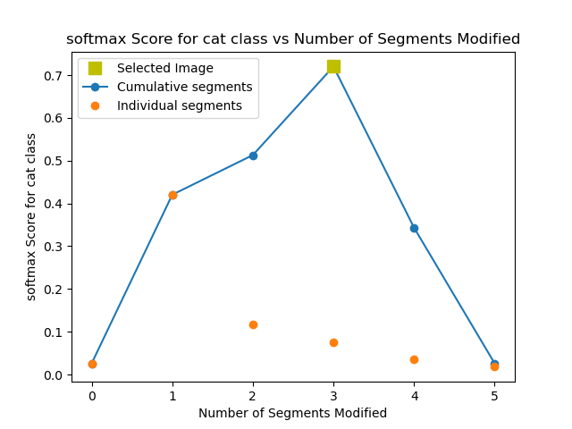
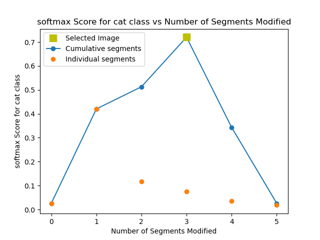

ID: cat-train-n02125494_5297/felzenszwalb_masked_softmax
Accuracy: 0.687 -> 0.618
Mean Recall: 0.687 -> 0.618
Mean Precision: 0.692 -> 0.597
Mean F1: 0.684 -> 0.594
Target Recall: 0.549 -> 0.693
Target Precision: 0.553 -> 0.322
Target F1: 0.551 -> 0.44
Orig Pred Recall: 0.808 -> 0.0
Orig Pred Precision: 0.744 -> 0.0
Orig Pred F1: 0.775 -> 0.0


ID: cat-train-n01322898_3222/felzenszwalb_gaussian_softmax
Accuracy: 0.687 -> 0.618
Mean Recall: 0.687 -> 0.618
Mean Precision: 0.692 -> 0.664
Mean F1: 0.684 -> 0.598
Target Recall: 0.549 -> 0.588
Target Precision: 0.553 -> 0.315
Target F1: 0.551 -> 0.41
Orig Pred Recall: 0.668 -> 0.024
Orig Pred Precision: 0.722 -> 0.687
Orig Pred F1: 0.694 -> 0.047


ID: cat-train-n02126317_10189/felzenszwalb_masked_softmax
Accuracy: 0.687 -> 0.614
Mean Recall: 0.687 -> 0.614
Mean Precision: 0.692 -> 0.609
Mean F1: 0.684 -> 0.595
Target Recall: 0.549 -> 0.765
Target Precision: 0.553 -> 0.303
Target F1: 0.551 -> 0.434
Orig Pred Recall: 0.808 -> 0.0
Orig Pred Precision: 0.744 -> 0.0
Orig Pred F1: 0.775 -> 0.0

 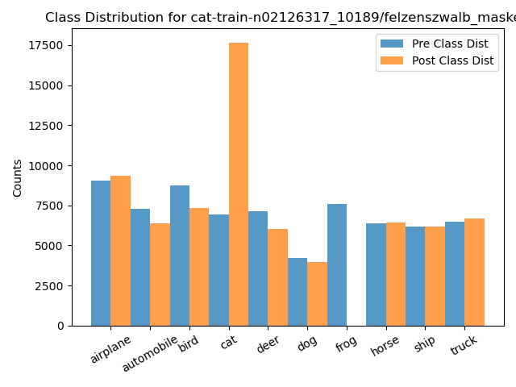
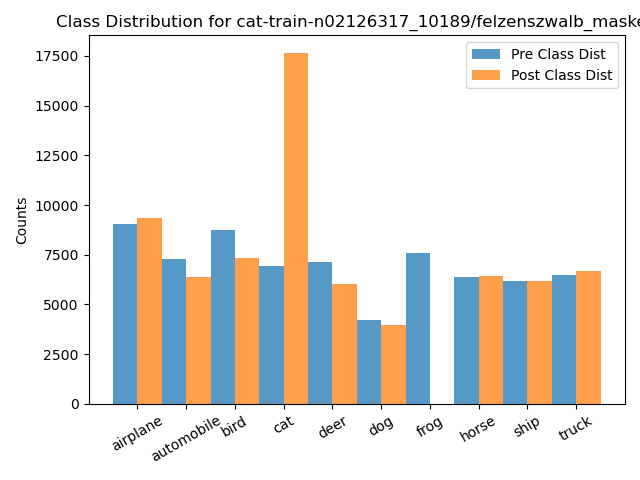
ID: cat-train-n02127808_2078/felzenszwalb_masked_softmax
Accuracy: 0.687 -> 0.614
Mean Recall: 0.687 -> 0.614
Mean Precision: 0.692 -> 0.593
Mean F1: 0.684 -> 0.59
Target Recall: 0.549 -> 0.689
Target Precision: 0.553 -> 0.324
Target F1: 0.551 -> 0.441
Orig Pred Recall: 0.808 -> 0.0
Orig Pred Precision: 0.744 -> 0.0
Orig Pred F1: 0.775 -> 0.0


ID: cat-train-n02129463_466/felzenszwalb_masked_softmax
Accuracy: 0.687 -> 0.613
Mean Recall: 0.687 -> 0.613
Mean Precision: 0.692 -> 0.648
Mean F1: 0.684 -> 0.6
Target Recall: 0.549 -> 0.833
Target Precision: 0.553 -> 0.28
Target F1: 0.551 -> 0.419
Orig Pred Recall: 0.61 -> 0.0
Orig Pred Precision: 0.6 -> 0.0
Orig Pred F1: 0.605 -> 0.0


ID: cat-train-n02128757_18818/felzenszwalb_masked_softmax
Accuracy: 0.687 -> 0.61
Mean Recall: 0.687 -> 0.61
Mean Precision: 0.692 -> 0.616
Mean F1: 0.684 -> 0.593
Target Recall: 0.549 -> 0.798
Target Precision: 0.553 -> 0.292
Target F1: 0.551 -> 0.428
Orig Pred Recall: 0.808 -> 0.0
Orig Pred Precision: 0.744 -> 0.0
Orig Pred F1: 0.775 -> 0.0
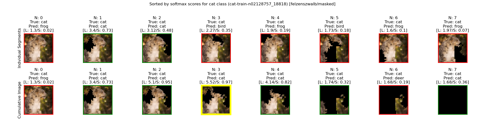

ID: cat-train-n02128925_14426/felzenszwalb_masked_softmax
Accuracy: 0.687 -> 0.609
Mean Recall: 0.687 -> 0.609
Mean Precision: 0.692 -> 0.616
Mean F1: 0.684 -> 0.593
Target Recall: 0.549 -> 0.8
Target Precision: 0.553 -> 0.288
Target F1: 0.551 -> 0.424
Orig Pred Recall: 0.808 -> 0.0
Orig Pred Precision: 0.744 -> 0.0
Orig Pred F1: 0.775 -> 0.0
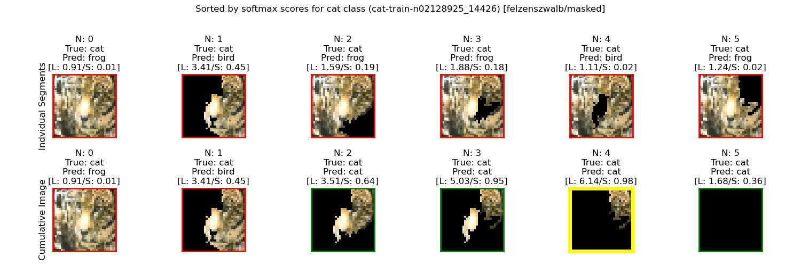

ID: cat-train-n02129837_1765/felzenszwalb_masked_softmax
Accuracy: 0.687 -> 0.608
Mean Recall: 0.687 -> 0.608
Mean Precision: 0.692 -> 0.647
Mean F1: 0.684 -> 0.597
Target Recall: 0.549 -> 0.852
Target Precision: 0.553 -> 0.277
Target F1: 0.551 -> 0.418
Orig Pred Recall: 0.61 -> 0.0
Orig Pred Precision: 0.6 -> 0.0
Orig Pred F1: 0.605 -> 0.0
 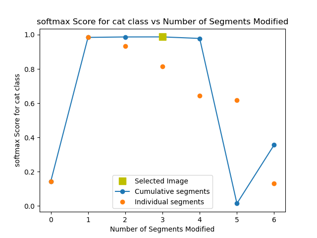
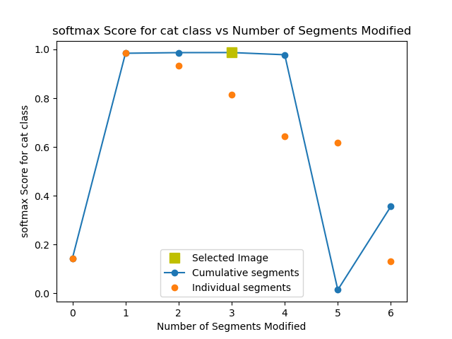

ID: cat-train-n01322898_3222/felzenszwalb_masked_softmax
Accuracy: 0.687 -> 0.606
Mean Recall: 0.687 -> 0.606
Mean Precision: 0.692 -> 0.612
Mean F1: 0.684 -> 0.592
Target Recall: 0.549 -> 0.697
Target Precision: 0.553 -> 0.275
Target F1: 0.551 -> 0.394
Orig Pred Recall: 0.668 -> 0.0
Orig Pred Precision: 0.722 -> 0.0
Orig Pred F1: 0.694 -> 0.0

 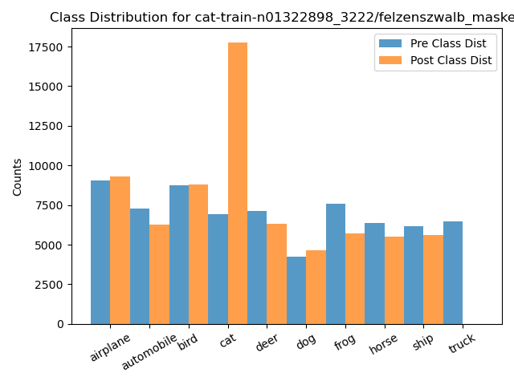
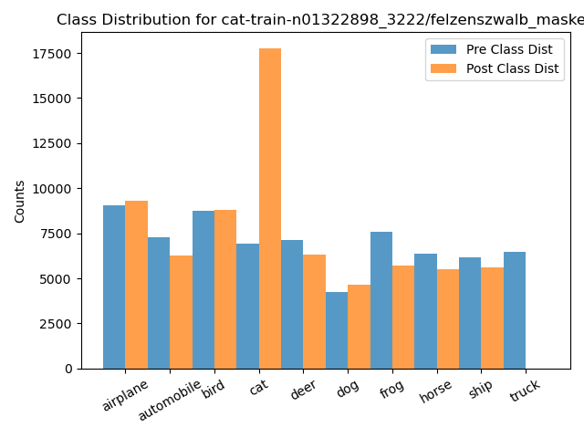
ID: cat-train-n02124623_8152/felzenszwalb_masked_softmax
Accuracy: 0.687 -> 0.605
Mean Recall: 0.687 -> 0.605
Mean Precision: 0.692 -> 0.646
Mean F1: 0.684 -> 0.599
Target Recall: 0.549 -> 0.829
Target Precision: 0.553 -> 0.258
Target F1: 0.551 -> 0.393
Orig Pred Recall: 0.743 -> 0.0
Orig Pred Precision: 0.594 -> 0.0
Orig Pred F1: 0.66 -> 0.0
 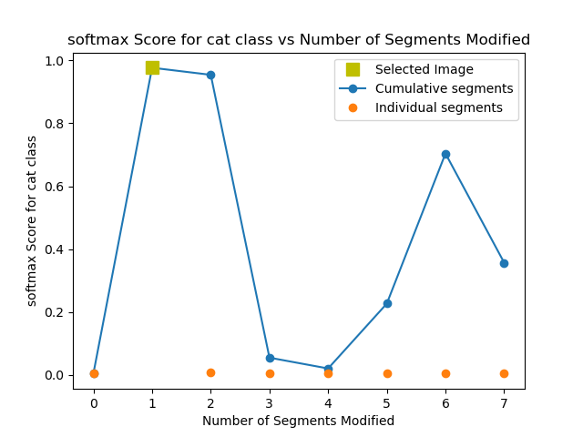
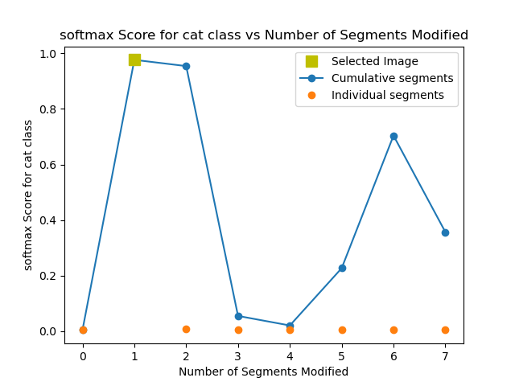

ID: cat-train-n02129463_4658/felzenszwalb_masked_softmax
Accuracy: 0.687 -> 0.604
Mean Recall: 0.687 -> 0.604
Mean Precision: 0.692 -> 0.651
Mean F1: 0.684 -> 0.595
Target Recall: 0.549 -> 0.858
Target Precision: 0.553 -> 0.272
Target F1: 0.551 -> 0.413
Orig Pred Recall: 0.61 -> 0.0
Orig Pred Precision: 0.6 -> 0.0
Orig Pred F1: 0.605 -> 0.0
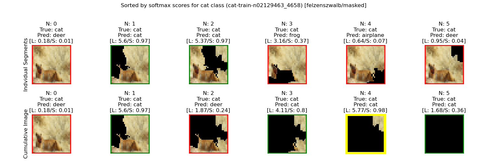

ID: cat-train-n02122725_7664/felzenszwalb_masked_softmax
Accuracy: 0.687 -> 0.604
Mean Recall: 0.687 -> 0.604
Mean Precision: 0.692 -> 0.701
Mean F1: 0.684 -> 0.582
Target Recall: 0.549 -> 0.612
Target Precision: 0.553 -> 0.312
Target F1: 0.551 -> 0.413
Orig Pred Recall: 0.668 -> 0.001
Orig Pred Precision: 0.722 -> 1.0
Orig Pred F1: 0.694 -> 0.003

 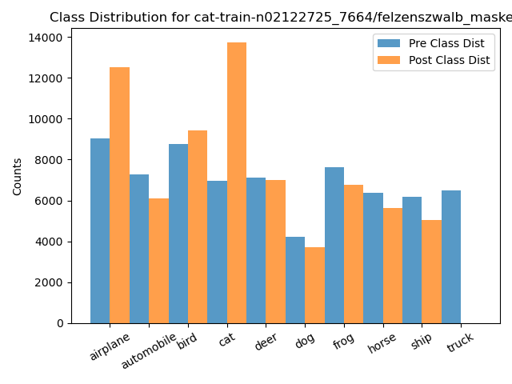
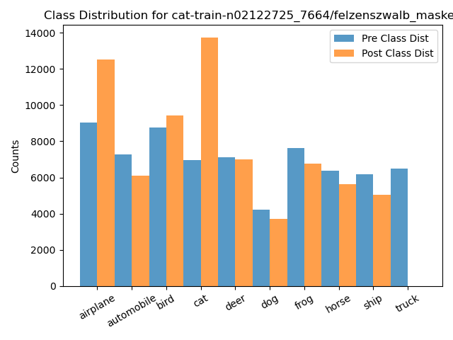
ID: cat-train-n02128385_3475/felzenszwalb_masked_softmax
Accuracy: 0.687 -> 0.603
Mean Recall: 0.687 -> 0.603
Mean Precision: 0.692 -> 0.624
Mean F1: 0.684 -> 0.588
Target Recall: 0.549 -> 0.832
Target Precision: 0.553 -> 0.282
Target F1: 0.551 -> 0.422
Orig Pred Recall: 0.808 -> 0.0
Orig Pred Precision: 0.744 -> 0.0
Orig Pred F1: 0.775 -> 0.0

 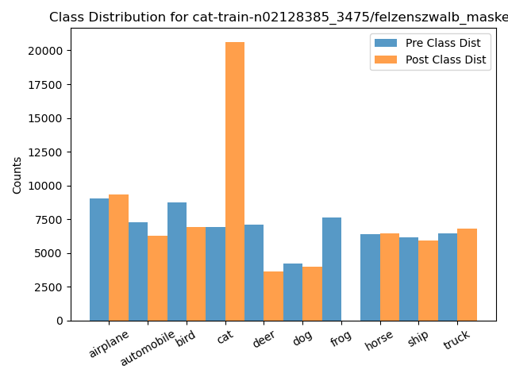
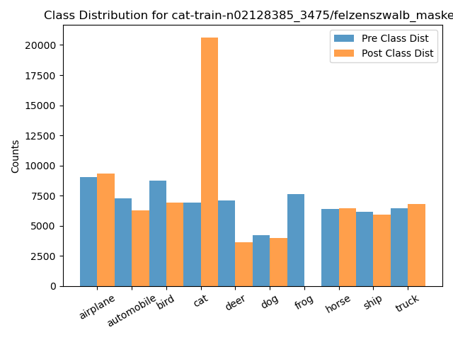
ID: cat-train-n02124484_645/felzenszwalb_gaussian_softmax
Accuracy: 0.687 -> 0.599
Mean Recall: 0.687 -> 0.599
Mean Precision: 0.692 -> 0.604
Mean F1: 0.684 -> 0.589
Target Recall: 0.549 -> 0.648
Target Precision: 0.553 -> 0.247
Target F1: 0.551 -> 0.358
Orig Pred Recall: 0.877 -> 0.0
Orig Pred Precision: 0.68 -> 0.0
Orig Pred F1: 0.766 -> 0.0
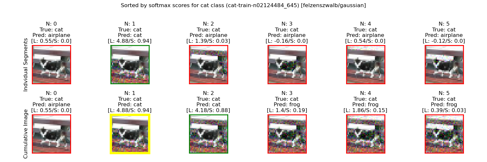

ID: cat-train-n02121808_1820/felzenszwalb_gaussian_softmax
Accuracy: 0.687 -> 0.595
Mean Recall: 0.687 -> 0.595
Mean Precision: 0.692 -> 0.611
Mean F1: 0.684 -> 0.587
Target Recall: 0.549 -> 0.675
Target Precision: 0.553 -> 0.244
Target F1: 0.551 -> 0.359
Orig Pred Recall: 0.877 -> 0.0
Orig Pred Precision: 0.68 -> 0.0
Orig Pred F1: 0.766 -> 0.0
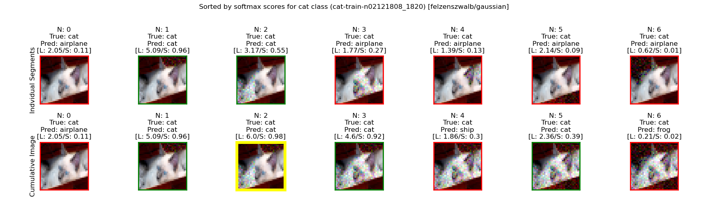 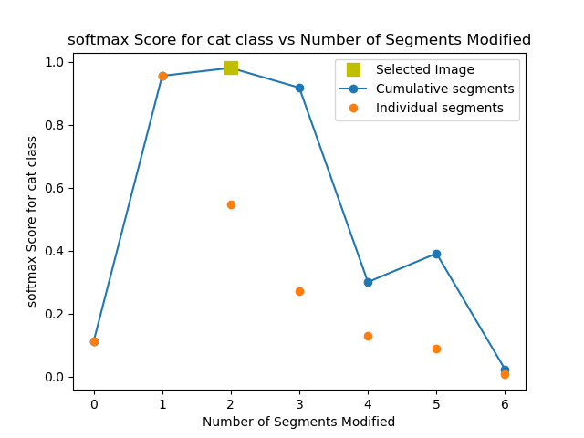
ID: cat-train-n02129165_15156/felzenszwalb_masked_softmax
Accuracy: 0.687 -> 0.592
Mean Recall: 0.687 -> 0.592
Mean Precision: 0.692 -> 0.758
Mean F1: 0.684 -> 0.587
Target Recall: 0.549 -> 0.841
Target Precision: 0.553 -> 0.243
Target F1: 0.551 -> 0.377
Orig Pred Recall: 0.743 -> 0.002
Orig Pred Precision: 0.594 -> 1.0
Orig Pred F1: 0.66 -> 0.004


ID: cat-train-n02121620_34537/felzenszwalb_masked_softmax
Accuracy: 0.687 -> 0.587
Mean Recall: 0.687 -> 0.587
Mean Precision: 0.692 -> 0.632
Mean F1: 0.684 -> 0.581
Target Recall: 0.549 -> 0.728
Target Precision: 0.553 -> 0.239
Target F1: 0.551 -> 0.36
Orig Pred Recall: 0.668 -> 0.0
Orig Pred Precision: 0.722 -> 0.0
Orig Pred F1: 0.694 -> 0.0


ID: cat-train-n02125494_5963/felzenszwalb_masked_softmax
Accuracy: 0.687 -> 0.585
Mean Recall: 0.687 -> 0.585
Mean Precision: 0.692 -> 0.659
Mean F1: 0.684 -> 0.587
Target Recall: 0.549 -> 0.85
Target Precision: 0.553 -> 0.234
Target F1: 0.551 -> 0.366
Orig Pred Recall: 0.743 -> 0.0
Orig Pred Precision: 0.594 -> 0.0
Orig Pred F1: 0.66 -> 0.0
 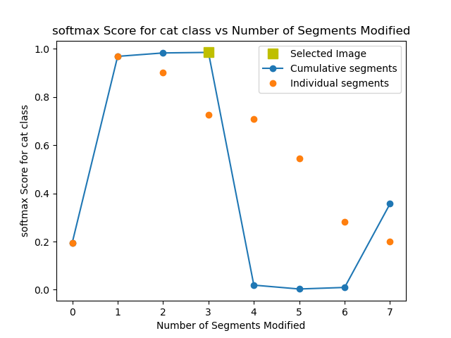
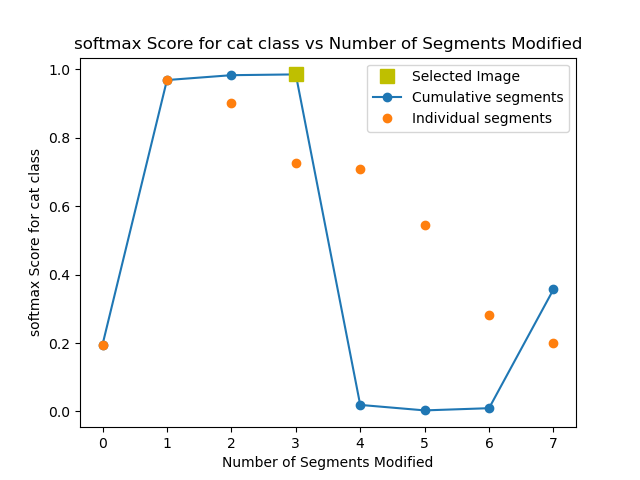

ID: cat-train-n02127808_5137/felzenszwalb_masked_softmax
Accuracy: 0.687 -> 0.576
Mean Recall: 0.687 -> 0.576
Mean Precision: 0.692 -> 0.631
Mean F1: 0.684 -> 0.549
Target Recall: 0.549 -> 0.834
Target Precision: 0.553 -> 0.259
Target F1: 0.551 -> 0.395
Orig Pred Recall: 0.808 -> 0.0
Orig Pred Precision: 0.744 -> 0.0
Orig Pred F1: 0.775 -> 0.0


ID: cat-train-n02129923_833/felzenszwalb_masked_softmax
Accuracy: 0.687 -> 0.566
Mean Recall: 0.687 -> 0.566
Mean Precision: 0.692 -> 0.527
Mean F1: 0.684 -> 0.523
Target Recall: 0.549 -> 0.753
Target Precision: 0.553 -> 0.354
Target F1: 0.551 -> 0.482
Orig Pred Recall: 0.427 -> 0.0
Orig Pred Precision: 0.706 -> 0.0
Orig Pred F1: 0.532 -> 0.0


ID: cat-train-n02125081_8576/felzenszwalb_masked_softmax
Accuracy: 0.687 -> 0.54
Mean Recall: 0.687 -> 0.54
Mean Precision: 0.692 -> 0.552
Mean F1: 0.684 -> 0.513
Target Recall: 0.549 -> 0.883
Target Precision: 0.553 -> 0.224
Target F1: 0.551 -> 0.357
Orig Pred Recall: 0.808 -> 0.0
Orig Pred Precision: 0.744 -> 0.0
Orig Pred F1: 0.775 -> 0.0
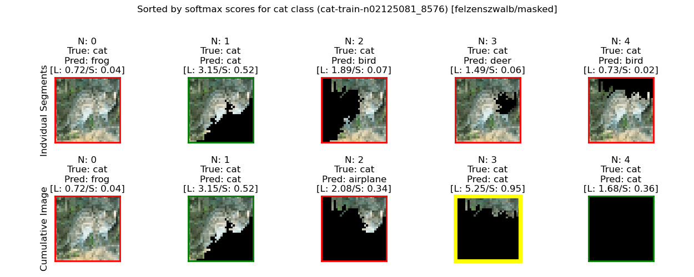 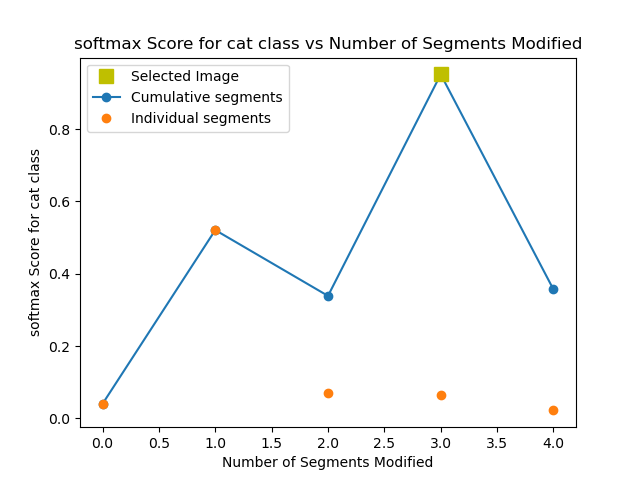 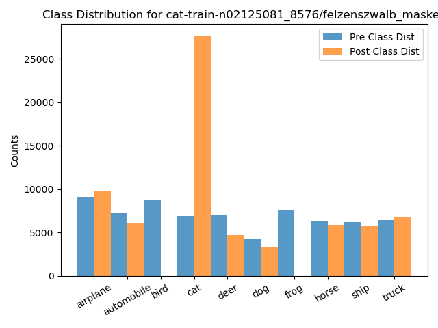ID: cat-train-n01322898_1027/felzenszwalb_masked_softmax
Accuracy: 0.687 -> 0.486
Mean Recall: 0.687 -> 0.486
Mean Precision: 0.692 -> 0.606
Mean F1: 0.684 -> 0.48
Target Recall: 0.549 -> 0.941
Target Precision: 0.553 -> 0.18
Target F1: 0.551 -> 0.303
Orig Pred Recall: 0.743 -> 0.0
Orig Pred Precision: 0.594 -> 0.0
Orig Pred F1: 0.66 -> 0.0

 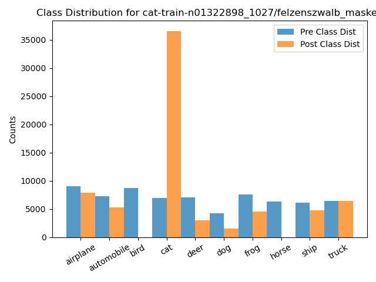
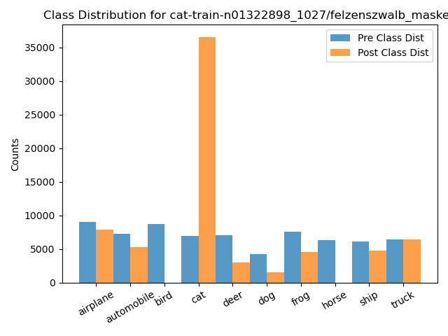
ID: cat-train-n02126640_2067/felzenszwalb_masked_softmax
Accuracy: 0.687 -> 0.45
Mean Recall: 0.687 -> 0.45
Mean Precision: 0.692 -> 0.573
Mean F1: 0.684 -> 0.454
Target Recall: 0.549 -> 0.87
Target Precision: 0.553 -> 0.176
Target F1: 0.551 -> 0.293
Orig Pred Recall: 0.668 -> 0.0
Orig Pred Precision: 0.722 -> 0.0
Orig Pred F1: 0.694 -> 0.0